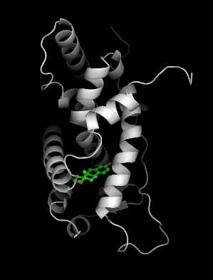
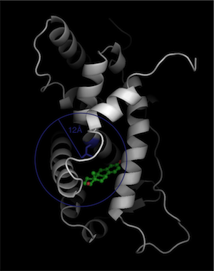
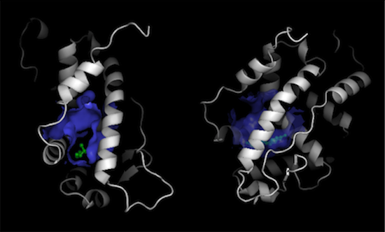
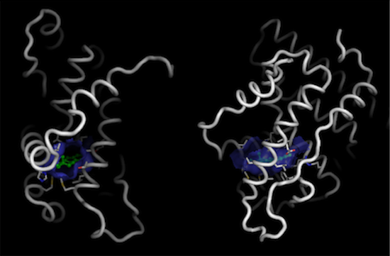

The ligand-binding domain of the Estrogen Receptor [1QKT] is activated by the binding of estrogen. Here, we show how to visualize this binding site.
To illustrate the binding surface of estrogen, we need to delete the ligand so we can construct the surface from the apo structure. We make the pdb file '1qkt-apo.pdb' by deleting all waters and ligands.
We need to define a constraint around the site where the surface of the binding site is defined by the intersection of the constraint with the protein. In this case, we will use a spherical constraint, where it doesn't matter if the radius extends out of the body of the protein. We need to choose an atom to define the center. It's best to choose an atom that is about half way into the pocket: A-LEU-384-CD1 (blue):
Putting this all together, we type in a text file called 'constraint':
{
'remove_asa_shell': False,
'type': 'sphere',
'radius': 12.0,
'chain1': 'A',
'res_num1': 384,
'atom1': 'CD1',
}
We now run python hollow with the constraint file that will generate the hollow spheres based on this constraint, with the important information that hollow spheres on the surface of the sphere are labeled occupancy q=0, and hollow spheres inside the sphere are labeled occupancy q=1:
>>> python hollow -c constraint -o hollow.pdb 1qkt-apo.pdb
We now load the hollow spheres load into pymol into the objects "hollow" and "1qkt". Note that we use the apo structure of 1qkt to calculate hollow, but load the full structure with the ligand:
>>> pymol hollow.pdb 1qkt.pdb
Once in pymol, we show the binding surface defined by the constraint by showing the surface of hollow spheres inside the sphere (q=1) using two-sided lighting:
pymol> show surface, hollow and q>0
pymol> hide nonbonded
pymol> set two_sided_lighting, on
pymol> set surface_quality, 1

However, if you only want to show the surface that binds to the ligand, this is also very easy to do in Pymol where you just choose the subset of the hollow spheres within 5 � of the ligand:
pymol> hide surface
pymol> select lig, resn EST
pymol> select binding_hollow, hollow and q>0 and (lig around 5)
pymol> show surface, binding_hollow
pymol> cartoon tube
Before we show this surface, we can use similar commands to also display the residues that are close to the ligand and define this close binding surface
pymol> select lining, byres lig around 5
pymol> show sticks, lining
pymol> cartoon tube

Finally, we can do a detailed picture of just the binding pocket:
pymol> hide cartoon
This process can be repeated using different grid-spacings for more accurate surfaces. The size and orientation of the sphere can be adjusted by varying the radius, and center of the sphere.